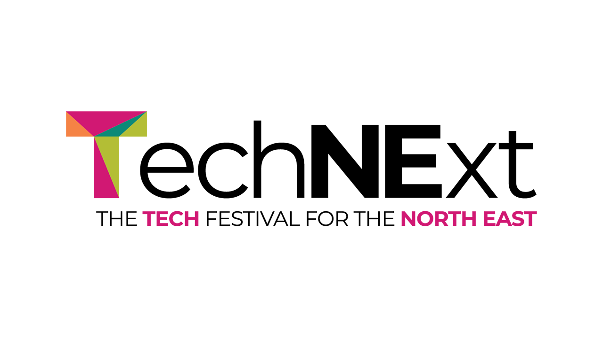

TechNExt 2025 - Main Stage
Jamie Hardesty - Welcome
Jamie welcomed everyone to year three of TechNExt and thanked those coming for the first time and those returning. The reason to put this event on is they are proud of the tech sector on the North East and how it interchanges with the rest of the economy and have events from Blyth to Redcar to bring everyone together. Jamie is the first one to say we need to do better in the North East and be inclusive and grow the sector. He is aware of many of the people in the room and today fills them with pride.
Jamie mentioned they have some brilliant keynote speakers including Zoe from the BBC and Tom who is a leading tech entrepreneur and from local and national government and see what is going on with UK tech and look at developments outside our borders and how that shapes our narrative and a teaser of what is happening this week. They had really inciteful feedback so have coalesced the offering with the hubs with a jam-packed schedule to enjoy this week. This week is all about positivity and collaboration.
Phil Witcherley, North East Combined Authority (NECA)
Phil is from the North East Combined Authority and will give an insight about how they are excited about the North East tech sector. He agrees we should do more with the tech sector which is booming and employs thousands of people and is not just one thing from games, fin tech, immersive tech, esports and space applications with companies like Sage, Aspire and Opencast. Are looking at growing AI such as the data centre in Blyth but it is not just about doing things and those things at scale but creating jobs in the region that people can aspire to.
The huge impact of Sunderland Software City cannot be overstated to grow skills and digital adoption. National programmes is taking work to make sure this region is positioned to grow the community and what we can do for growth in the sector. Where does tech fit into their strategy is working on the industrial strategy and have done a local growth plan and selecting priorities where AI, digital and tech is one of the sectors they are championing to help all businesses grow in the region and looking at growing digital adoption including AI adoption in all sorts of businesses.
Zoe Kleinman, Technology Editor BBC - Tech, Talent and Tomorrow's World
Zoe has insights across the UK and wanted to start by giving a huge congratulations to you all as they are impressed with what is going on in the North East and can hear it and there is a sense of momentum to be proud about. Zoe looked for hidden gems including Atom Bank or Tharsus building robots or Sage based on the region and NETPark pushing boundaries of tech, there is Hedgehog Lab starting in Newcastle and expanding into Yorkshire and Behaviour UK North which makes games. All of this is backed by many universities part of a thriving higher education sector.
They felt there is a lot to be shouting about more loudly but there is a lot of challenges which are not unique to the North East as they are industry and UK wide. They spend a lot of time talking to startups and ask what is your dream and how do you know what you are building is successful. What are the kind of things that have dreams to do including tech for music, help the world eat better, funding for the North East, help people get their ideas and stories to those who need to hear them the most and to help people realise their dreams and get the business they want to get.
What are we trying to do but like to think we can be ambitious and in this country, there has been innovation, and we are great at R&D and startups, but we don't build giants. They spend time speaking to people to try and figure this out, the challenges are access to capital which is a real barrier such as delays to getting grants. Another challenge is digital skills shortages we need more of this and better retraining pathways for people to upskill or change careers and are there enough people to fill gaps, we have universities working together but need to look at opening doors even wider. Cultural attitudes to failure, failure is toxic and shameful here in the UK as don't want to be the person who failed to make something work, we don't want anyone to know about it, if too scared to fail does this stop us having a go. Infrastructure gaps where need better access including faster networks, improved transport links and energy along with maximising how we use it.
We have some exciting and powerful opportunities coming up and challenges coming up fast with an opportunity to ride that wave, there is a sense of excitement and momentum. Artificial intelligence might not realise it now, but we have a ring-side seat to an industrial revolution culture shift, change when it happens it happens fast. Five AI projects that are really exciting which include cleaner skies with an AI tool for pilots to halve contrails from aircraft and AI and Google Maps is being used to reduce traffic flow. Microchip created by AI has enabled a paralysed man to walk again or technology to measure brainwaves to drive a jet ski in VR by thinking about it and it worked by thinking about squeezing the trigger but the implications of this for those who have lost ability to do something is a game changer.
AI health breakthroughs include a new antibiotic to kill a deadly hospital superbug that couldn't treat before or using AI for symptom spotting for a particular disease that would have been missed at an early stage but it is about data as a lot of things were flagged that had been ruled out at an early stage, the future of medicine using AI for a specific treatment for a specific patient with some small and early trials with astonishing and encouraging results. Nuclear fusion where AI can be used to predict an outcome for an experiment to develop the same way the sun creates its energy, nuclear fusion has been worked on since the 1960s but AI can massively speed up research and analyse data. It has been two and a half years since ChatGPT and people interact with it on a regular basis, generative AI tools can create content, images, summarise meetings and more but are moving towards agentic AI that can churn through multi-stage tasks and for the world of work where think about AI as a tool not a creature and take the drudgery out of work.
AI is highlighting solutions to problems we didn't know existed such as looking into when Earthquakes will happen in New Zealand by looking at vibration of cables by using AI to process it all for observations including impact of traffic and impact of events miles away along with earthquakes as an example of looking for answers we weren't looking for. Amazon says it wants to deliver half a million packages by drone in the UK, there are drones delivering already or taking drone shots of wildlife. AI is helping with driverless cars which have done millions of miles already around the world and those being born now won't drive cars like we will today and going away from manual controls allows you to reimagine what a car looks like to be more like a café or a lounge but there is potential for changing the way we travel and Uber is ready to put driverless cars on the roads in the UK once the law allows. Rise of robots which perform operations or make cocktails on cruise ships and are good at doing one thing well but they don't need to look like us for example wheels are better than legs.
Think about glasses, Google Glass or Snapchat Spectacles. Tech companies have took time to get this right but eventually they will get this right and we will all have them, they do have potential and will take off. What has changed since Covid as people embraced a digital life at an unprecedented rate and can bring together people in a room who can't be there. Zoe was one of the first to try out Apple's headset and spent a lot of time trying it out and wondering why Apple doing this and why are they getting into it, the demo was doing the everyday things that they do on their phone such as looking at photos that were the size of the room, but it wasn't about shooting aliens or walking with dinosaurs as once you've done that you've done it but other things is living your everyday life in a different way. They had a similar experience with Meta's Orion glasses where they played an VR powered ping-pong game or look at ingredients on a table to get a recipe to make them. How do these products fit alongside our existing devices but wouldn't it be fantastic if the next part of the story is in the UK or better still in the North East and be part of the next big thing.
Are people scared about what is coming from the technology scene or are people quite accepting of it. It is really exciting and beneficial but is quite scary and massively disruptive and it can be hard to know what to coach children with or what direction to go in, it is quite a big thing to take onboard. Nobody is going to put the brakes on but the thing we need to do is to understand it and what they are trying to do is give people the information they need to make a decision. It is mainly United States companies that are shaping all our lives which we need to at least be aware of. Sometimes we lack that confidence to build world-leading companies but those who are having success what gives them that belief is they don't give up and have a resilience. They met someone developing a Quantum computer which is very different to computers we have now and they set out to develop something that was told was physically not possible, but he had a chip that worked but took 3,500 attempts before that to make it work, that is what they see that absolute grit. The big message is how to ensure a responsible and ethical use of AI, with Ai the brakes have come off a bit.
Tom Foster-Carter, CEO & Co-founder Cherrypick - State of Unicorn Kingdom
Tom is a proud northerner who has done a few things including Osper, Curve, Monzo and Cherrypick and was asked to talk about the state of UK tech which may have been a guaranteed snore-fest. He was invited for a party for tech entrepreneurs at 10 Downing Street which had ten in binary on the door and people there were saying Unicorn Kingdom instead of United Kingdom.
How to grow Unicorns is to pick an idea from a sea of crazy of ideas and are looking for a hatchling that can fly and see what works and raise some seed capital and then see how it can fly but it is hard to get momentum with bootstrapping or can get venture capital funding to catapult your idea. Hopefully you'll achieve self-sustaining flight to then go from starting out to scaling and then exiting. You should know what season you are in of a business, are you the first to spot something.
Why the obsession with unicorns, there are three reasons which is it as a pretty good success metric, enormously aspirational where founders want to build them and they are key for the economy where can look at equity performance of the magnificent seven of Apple, Microsoft, nVidia and more. The top five private companies globally include SpaceX, OpenAI and xAI where some of these are hectacorns so companies need to go big to compete in tech and the definition of big is changing and need to become a Unicorn just to compete at a base level in tech.
We have a lot to celebrate with unicorns as are number three in the world here in the UK and against Europe doing well but on a per-capita basis aren't doing as well. The rate of unicorn production slowed a couple of years ago but this was part of a global trend but this year is looking really good. There are Soonicorns which are companies on the path to becoming unicorns with some really exciting companies coming through.
UK tech startups have a $1.2 trillion where half of this are companies founded in last fifteen years, the entire FTSE 100 is $1.5 trillion. We are using potential of universities with spinouts as well as building up knowledge. There are powerful incentives and mostly pragmatic environment but for early-stage funding is declining and will be an issue if don't fix this as soon as possible. Scaling companies are doing better with late stage are Soonicorns and funding is hard to get for these companies. IPO situation is a complete disaster which they are basically not happening but exits are happening with the highest for some time last year, but IPOs are holding capital that needs to be released. New venture capital funds resulted in a really good year last year to invest in British companies, but this money is not being spread evenly with London taking more than it should but one of the fastest growing regions is the North East. 2% of female founders are getting capital but there is 14% getting funding with mixed founders. 259 startups have been founded from people from unicorns showing that unicorns can grow more unicorns.
How can we fix it? Getting the basics right across capital, regulation and talent. Decisions are being taken without focusing on the tech so need some kind of super committee to guide government and need to fix that funding squeeze and utilise the assets we have. We need to have a massive campaign from those across the country to invest and have fun at the same time, R&D tax credits used to be the envy of the world where legitimate money needs to be paid back because of a small minority of those who abused this, the government needs to step in to tighten up guidelines and give clarity. We need to think better and bolder, how do we take control of the situation, and we need bigger thinking around capital such as a sovereign wealth fund and need to have a bigger impact from the British Business Bank and need government to make this happen. For policy have to think about impact for startups and for highest growth companies shouldn't pay national insurance for first year as this will allow them to pay more in the long term.
The dream is to create a unicorn production factory, so need to create a huge factory of potential, create an incubator or accelerator with the support they need and work with top angel investors and bring in other high net worths and invite venture capitalists to the region. For founders in the room which is one thought which is to be intentional about the kind of company you want to build, there are a certain set of things to do to become a unicorn so what is interesting is being a stallion where can bootstrap and angel fund where need a smaller exit to do really well with a life changing sum. Donkeycorns are small team companies that are focused on high profit over growth and leverage AI which grind like a donkey and party like a unicorn.
Jamie spoke to Tom, Jamie wrote an article about startup growth about backing the founder not the idea, there is the idea of a ecosystem and where this has worked. Tom mentioned Tech Nation which does an incredible job where his first company he co-founded was Curve and worked with highest growth series-A companies which brought them together to meet other founders and created systems so people were more vulnerable with bubbles of founders like group therapy where would talk not just about company and life and are still in touch with this group, they also brought in inspirational founders who talked about their experience and could ask questions and do this year on year which has been carried on by Founders Forum. Jamie mentioned these facilitated groups can be really helpful.
Jamie mentioned having the universities we have and talent we have and have more people coming from academia and spinouts. Tom mentioned there was a huge opportunity before but wasn't resulting in startups but now there are universities with the breakthroughs that are being encouraged to start companies around them, but scientists often don't make good founders so need to give them those skills early and this should be happening more widely. We have an incredible opportunity to build more companies, need to think in an entrepreneurial way and think it is possible.
What drives Tom and about creating another unicorn, they have a decision to spend time with new founders or to go again, they have four startups and need to think about where their energy comes from, what is the drive, the drive for Cherrypick was about helping people to eat better. If they were doing another company it would have to be something they massively believe in, everyone is talking about AI for good reason so if are a founder it is a wasted opportunity not to do something there. You can pick any industry and see how AI will change it so might as well be you who is creating those companies as it is a really good time for companies.
Jamie asked about privilege and how things are shifting on how founders sound and look beyond pale, male and stale. Tom mentioned change is not happening fast enough and he has been the benefit of privilege which is a box of tickets you can pull out, we are privileged being born in this country, he mentioned being privileged as a man and going to Oxford. Whether you are speaking the same language and the same accent as the venture capitalists is an issue, when times are good people want to make things better for everyone but when they aren't people aren't looking at the wider agenda and diversity is not being treated as importantly as it should be.
Tom was asked about team and characteristics of a team, he came into Monzo when it had a hundred employees which was fine as had thirty employees before but within two years had to hire a thousand people, it was an explosion of growth from 100,000 to 1,000,000 customers but now would look at things differently and wouldn't come at it as let's get more humans but get AI to do a lot of more basic things and have human-enabled AI and human supervised AI-agents and need to look at this as your competitors will be looking at this seriously and understand when to hire humans and where to use AI effectively and need to take the time to get things right.
If there's a unicorn factory churning them out then are they less special if they become more common. Tom said there are more unicorns as we can see this in the stats it was statistically rare when it was coined but we have cracked it and figured out a way to create those kind of companies, this is the time of big companies to compete globally and is the base level to do this, this is happening if you want to compete but not all of us need to do that, not all markets can support this so as founders can pick what the outcome they want such as a great lifestyle, life enhancing or life changing and can just take longer if want to keep more of your company. There will be fascinating companies that can reach great valuations and outcomes.
Emran Mian, Department for Science, Innovation and Technology (DSIT)
Jamie welcomed everyone back after the break to introduce Emran who is director general of DSIT. Emran has an uncle in Gateshead who uses a tablet to read newspapers who used to send clippings from newspapers and now does this on WhatsApp. Emran talked about what they are doing for AI, tech and ecosystem as a whole which is central to the government's ambitions and before the change of government couldn't say how to drive things forward but now is excited about tech and digital with an aim to grow this with a prime minister who recognises the opportunity of AI for the economy and country as a whole.
Emran talked about three things central to their approach was about talent and skills which is talking to founders who spend half of their time on talent and one of the things is from cyber first to tech first including extra-curricular things in school to build confidence in building things and using tech where talent and skills is a big focus. There is also a focus on building infrastructure for AI where planning has slowed things down and a lot of concentration is in the south of the country but are leaning hard on AI infrastructure around the country and asked about places for potential AI-growth zones which has allowed the government to push for this where it is ready to go and has a permissive building environment but it is more than building a big box in a field but there has to be an ecosystem around it with the firms who will use it and want to be really ambitious about AI growth zones.
When operating this tends to be at the boundary of schemes for regulations with the regulatory office which is to pick out use cases and businesses who are doing something new such as drones and where people are getting tripped up by existing regulatory boundaries to get their product to market but this is not necessarily deregulation but want to fix older regulations from a previous range. They want to hear from businesses on how to deliver an ambition from businesses. One of the very exciting things about what they do, which started with the levelling up programme which are issues where people hadn't thought about the country as a whole, and AI digital and tech will drive things in the country so need to think about how we do this now and not regret how they did things in two decades.
Jamie mentioned not wanting to feel like we've missed opportunities and asked what are the short and medium term things and how do we know we are doing well. Emran said if we are doing this right then local innovation money for £30 million in each mayoral combined authority and see this is making changes and tech first programmes are being delivered in the region for schools and universities and look at how fast things are going and another proof point is building AI assets which is a focus for all countries and it is not just about building the infrastructure but also how do businesses in the region and country benefit to be a stimulus for the region and the country as a whole.
Jamie Hardesty - Festival Week Preview
Jamie asked that people should hold Dynamo and Sunderland Software City to account as they work with local and national government to make things better to help with what they need to support the sector. TechNExt is about doing something more positive for the sector and have four tracks with Sustainability, Immersive Tech, Data & AI and Startups.
Sustainability Hub sponsored by Hedgehog Labs where the hub leader is Anna Mooney who initially didn't see the commercial value of sustainability and saw it as a box tick exercise, so tomorrow's event is to help businesses and leaders to use sustainability to really drive growth to do good and drive a profit at the same time. Amy is a marketer by trade and worked with marketing agencies for ten to fifteen years and they met and married someone in the heating sector and get involved with this and saw things were changing and talked about how things were changing together with her husband but learned it was a seasonal business which was cash rich in the winter so build a subscription model and automation and then decided to focus efforts into sustainability with energy transition from gas to become designers and installers of heat pumps and saw their subscription model was popular and doing the same thing for this and have started a company to use AI with heat pumps and upskill engineers based in Newcastle. Jamie asked if it has been difficult to transition into this space which was it was difficult as their existing network was no longer relevant but now have a fantastic network but now they find they need experts in AI as having to outsource this skillset to Italy. Amy is holding a workshop, where it doesn't matter if your business doesn't have sustainability built in but can have something to talk about and leave with at least one tangible step to become more sustainable and more profitable.
Data & AI Hub sponsored by Accenture will have an event from Jen Taylor with What's Next for Health to cast eye into the future into what game changing tech is coming in the future and have had a team of researchers working on this for about a year and they often don't realise how cool it is and hold a panel discussion which will close out the day including quantum physics, AI and wearables. The day will be at The Catalyst and Jen talked about NIHR which has a team of eighty researchers to look on the horizon for new medicines and med tech devices and can ask some of them what their favourite tech that is coming on the horizon is. Jamie mentioned we don't always tell the story and asked why Jen wanted to get involved and why this should be shared and Amy mentioned being part of Innovation Super Network being involved in TechNExt before and moving to NIHR Innovation Observatory seeing all these things that will help people in future and make quality of life better and wanted to shout about it and it is all based at Newcastle University and won the bid to source this in the North East.
Immersive Hub held at Proto in Gateshead will feature Robby Graham who is from Southpaw Company which is a dancing theatre company in the North East and work with community and professional casts and have been involved in the North East with immersive and digital tools to engage audiences in different ways and embrace storytelling. They have done responsive projection mapping and augmented reality to create a sense of spectacle and develop tools as part of their new studio full of digital tools and become an immersive space including motion capture and volumetric capture and want to diversify their output and their income. They session this Thursday will be a relaxed live session including performances with real-time augmented reality effects and more and share the suite of tools including challenges with everyone with some of the work they have carried out with those tools.
Tech Startups Hub in Durham, Jamie talked about building and championing the ecosystem and he spends a lot of time meeting startups right across the region and building a virtuous circle. At the hub they will be holding an opportunity with a round up along with questions and answers not only for the wins but the challenges in the region, which is a small and mighty region with a unique culture where we want to raise each other up. If interested in starting or growing a startup then coming along is worth it. If are time or industry served with many people who might not have time, then the time is right and see what is going on and get involved.
Jamie talked about the school's challenge with Manila and those from Norham High School we have going on for the tech sector and part of that is getting those young people to embrace tech. Manila talked about inspiring at the grass roots as the children in the region are the future of tech startups and we still don't have the representation across the sector. Part of the schools challenge was writing to schools to participate in tech solutions to real world problems to engage those from year 5 to 8 age groups to get the creative juices growing including cyber security, online gaming and money management or use their own imagination. It was about school children to work together to build prototypes, draw diagrams and make videos.
Mr Walker from Norham High School said they entered the competition last year and now again and came up with an idea for sustainability to create a good environment and good beaches in North Shields. They came up with Project Poseidon which is about cleaning up the oceans which included doing research about amount of plastics and use AI to find out how to combat the amount of pollution to develop idea of a drone to filter oil and gather plastics from ocean and they all worked together as a team. Manila talked about the suggestions and gathered feedback from the schools, those from Norham High School mentioned they didn't know how well they had done so far. The submission was very high quality with a design-led approach which was very well thought through for an autonomous ocean cleanup drone as a technological innovation to help with plastic pollution.